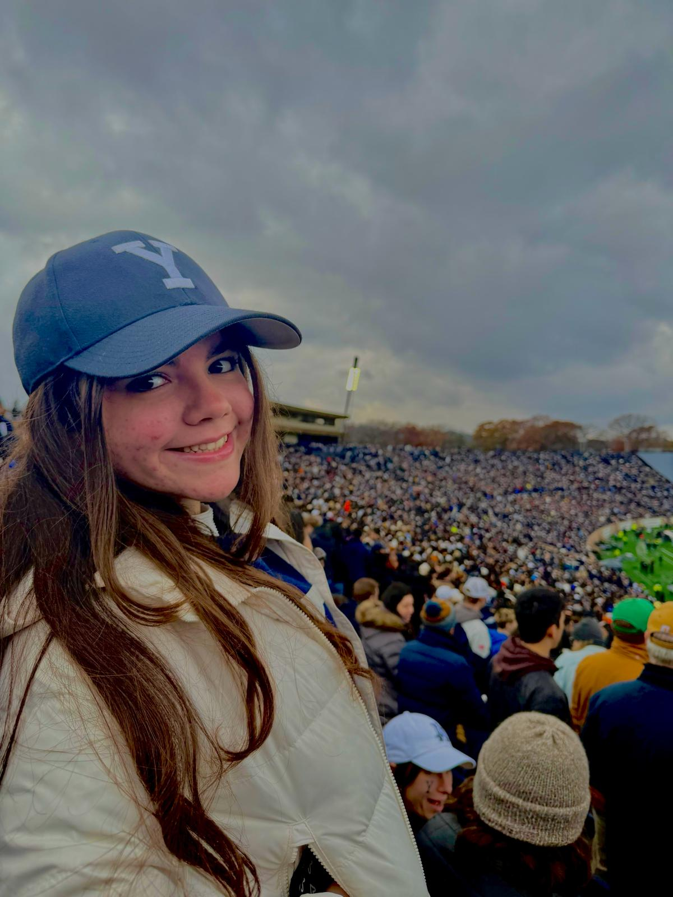

Patricia Huerta
I am originally from the beautiful city of Guaynabo in Puerto Rico.
I am a rising sophomore in Davenport College — go gnomes! I am majoring in Molecular Biophysics and Biochemistry on the pre-med track. I am super passionate about health, nutrition, and the heart, and I'm hoping to aid in decreasing the barriers in healthcare — being healthy is one of the biggest blessings in life and everyone should experience it.
I love food and cuisine; I truly believe it is an art. I love cooking myself, and I especially love trying new foods, restaurants, cafes, etc. It fills me with joy.
To accompany my love for food, I also adore exercise. Moving the body is yet another blessing God has given us, and whenever I can I try to move my body, so you might see me running or at the gym — feel free to say hi or join me!
Besides that I love photography, watching TV shows and movies, playing the guitar, rollerskating, spending time outdoors, and spending quality time with friends and family.
For me, the boricua community is so warm, so welcoming, so vibrant, so sweet, that joining the DB board was a must. Whether you have lived in PR or not, I will make sure as Social Chair that you feel at home by hosting events that connect you to PR and all its lovely traditions and culture.
¡Un abrazo!